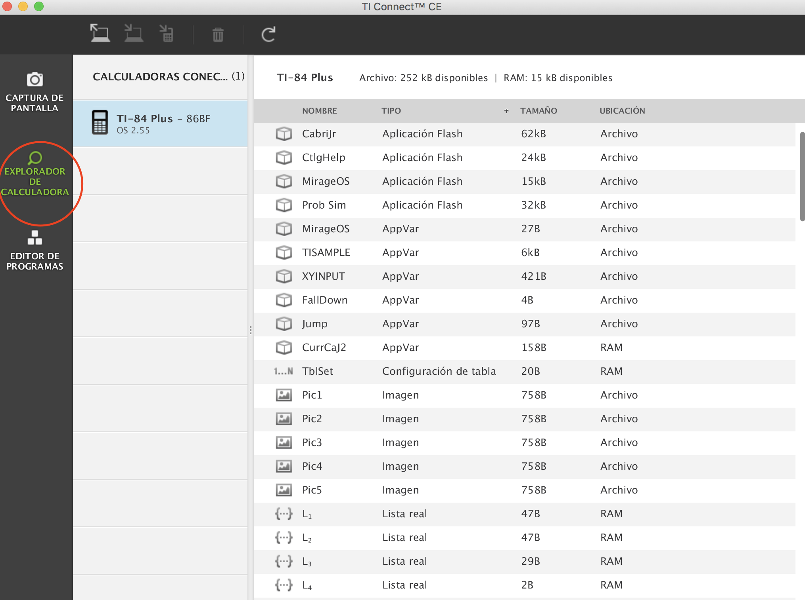
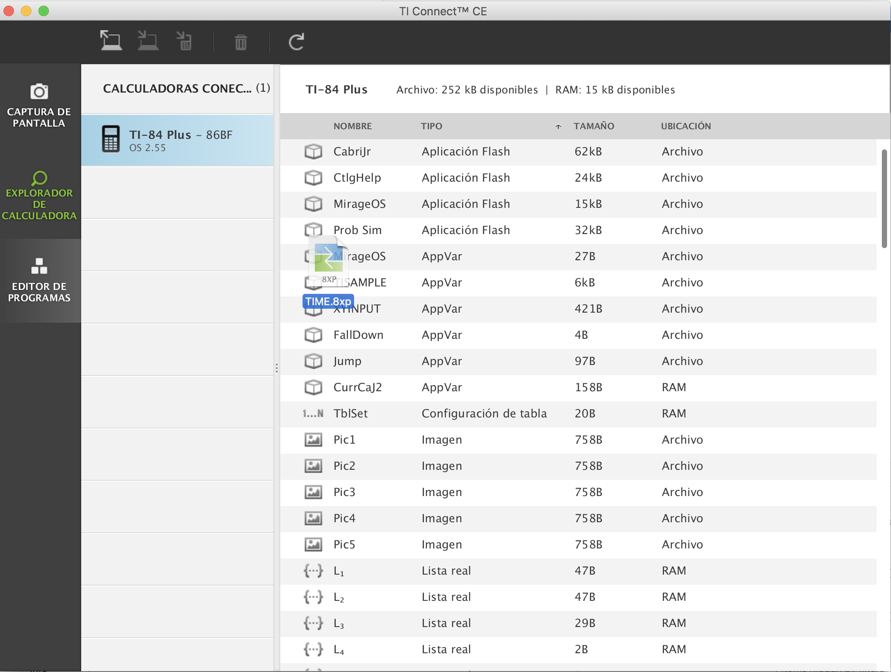
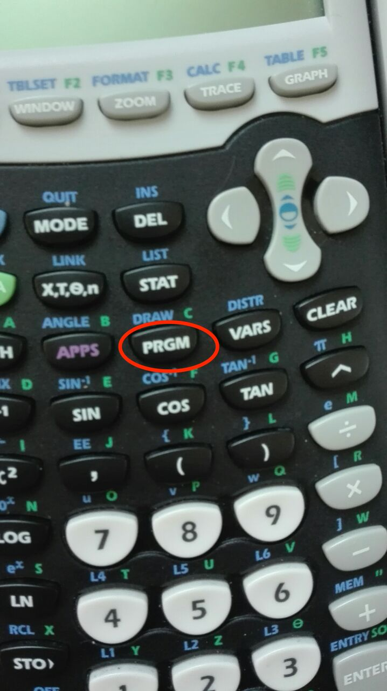
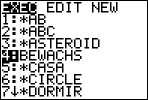
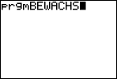

1. Take this cable and conect your TI-84 Plus with your computer.
2. Install this program on your computer .
3. Open TI-Connect CE and turn on your calculator.
4. Click here.
5. Drag the program that you want to install to your calculatror here.
6. To execute the program press this button on your calculator.
7. Select the program that you want to use and press enter.
8. Press enter again.
back